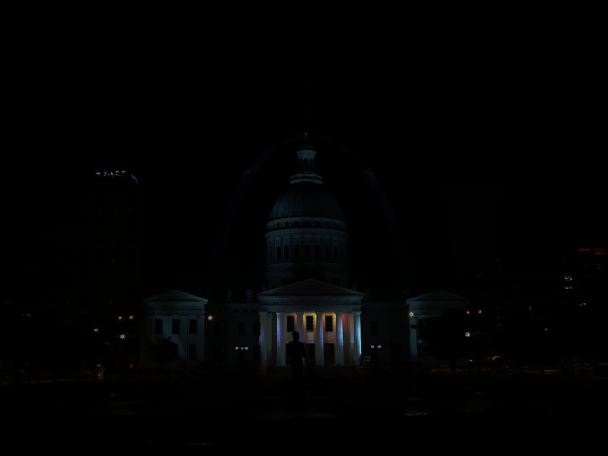

Project 6: High Dynamic Range & Eulerian Video Magnification
By Ethan Zhang
Overview
For my final projects, I explored the concept of HDR image merging and Eulerian Video Magnification. In the first
project, I explored using a various of techniques to estimate the true radiance map from a collection of images. With
the radiance map, it was then possible to squash the overall range of brightness in a series of photos to the range [0, 255]
that a display can expect / display (via a few tone mapping techniques). Then, I looked into Eulerian Video Magnification
which seemed like a cool technique to emphasize minute changes happening in a video.
High Dynamic Range
Recovering the Radiance Map
Referencing the paper from Debevec and Malik in 1997,
it was somewhat straightforward to estimate the true scene radiance (knowing the amount of exposure time the input image took) through
the estimation of a pixel response curve (f).
This is summarized through the equation:
Since f can be complex, the paper suggests solving for an estimate of the log inverse of f. Because the input images contain
a large amount of pixels values, it is possible to pick a sample of pixel values and use least squares to generally solve for
the parameters to g. With g estimated, the previous equation can be re-arranged to solve for Ei:
Chapel Source Images
In a scene where there are really bright spots and dark spots, it could become impossible to capture details inside
a single exposure thus necessitating the use of HDR merges. In the following set of pictures, it is not quite possible
for both the details of the windows and steps to be captured at once.
32s
8s
1/2s
1/8s
1/1024s
Radiance maps
With the techniques in hand, I ran the algorithm on the "chapel" testing set of photos to generate the following radiance maps:
Mean radiance across channels
Radiance linearly scaled back to 0-1
As expected, the windows were exceptionally bright as compared to the rest of the chapel.
Pixel Response Curves
Estimated Pixel Response (for RGB channels)
Tone Mapping
With the radiance map, it is then possible to adjust the scaling given to each radiance value (and stretch / squeeze
brightness ranges) to fit more of a range inside the same picture (since displays can only display a finite range). First,
I implemented a few global tone mapping operators which scaled based on a global estimate. Specifically, I used a linear scaling
and also the Reinhard et al. operator
. In the following gallery of results, it can be reasonably concluded that these simple operators did
very well in many situations. However, I also experimented with a local operator proposed in Durand 2002. This operator uses a bilateral filter to separate out
the lower frequencies for separate scaling. Also as shown below, it seems that this operator does better in revealing the
very brighter spots (like the windows) but have issues when the original radiance range is very high.
Global Scale (Chapel)
Reinhard (Chapel)
Durand (Chapel)

Global Scale (Arch)
Reinhard (Arch)
Durand (Arch)
Global Scale (Garage)
Reinhard (Garage)
Durand (Garage)
Global Scale (Garden)
Reinhard (Garden)
Durand (Garden)
Global Scale (House)
Reinhard (House)
Durand (House)
Global Scale (Mug)
Reinhard (Mug)
Durand (Mug)
Global Scale (Window)
Reinhard (Window)
Durand (Window)
B & W: Testing it on my own images!
Lastly, I took this opportunity to test the radiance mapping and tone mapping on some of my own images! I found this
really nice rooftop lounge that was extremely bright compared to the outsides at night.
3/2s (Roof)
1/3s (Roof)
1/40s (Roof)
Global Scale (Roof)
Reinhard (Roof)
Durand (Roof)
Professional (Roof)
Just for fun, I ran the same set of images through a professional HDR merger and I felt like my results were not bad at all!
In a few steps, the video is first parsed into individual frames.
With each frame, the color space is converted into YIQ since it is more useful for separating chromaticity and intensity. Then,
a laplacian pyramid is generated from each frame to deal with each spatial frequency band separately. Lastly, it is possible
to construct a signal for each pixel throughout time in the various frequency bands. With this in hand, filtering can be done
at a frequency level which allows the technique to accentuate movements with specific known frequency ranges.
For example, humans generally have a heart rate of 24 to 240 beats per minute which corresponds to 0.4 and 4Hz.
Laplacian Pyramid
For the frequency band separation, I chose to implement it with much similarity to that of project 2. However, I chose to
reduce the resolution by half at each pyramid level since the signal filtering operation is significantly computation-wise.
One difference here is that I chose to use a Gaussian kernel rather than the binomial filter as suggested in the paper.
Looking at the response curve, it didn't seem to have much of a difference so I stuck with my existing implementation.
To sample this process, I chose to output the Gaussian and Laplacian pyramids (in YIP) for the first frame. Specifically,
I chose a pyramid height of 3 since I found that the input video already had low resolution so a division of > 16 resulted
in very poor upscaling performance for the pyramid collapse portion. I also used a much smaller 2/3 division in terms of the size
to retain more resolution in between layers.
Signal Filtering
For this part of the project, I had a lot less experience with so I mostly followed the parameters suggested by the paper
for each part and did adjustments until I found a visually satisfying result. Specifics-wise, I chose to use a 6th order
butterworth filter which seemed much like a bandwidth filter since the edges are much sharper.
Then, I had to do a lot of shape manipulation to get the signal in the correct shape for batch processing.
Here are my results in the end:
Original Video
Motion and Color amplified
Original Video
Motion and Color amplified
From this result, I was already very satisfied by the clear motion amplification and color (that likely results from blood
rushing to the face during each pulse). Next, I also ran the same processing on "baby2.mp4" and a test video that I generated.
Explain any difficulties and possible reasons for bad results.
At the end of the day, I didn't get a chance to experiment indepthly with the filter design and the specific frequencies
in which the physical change was occurring. Because of this, my results were not as fine-tuned and showed the exaggerated movements
that the paper did. However, I think the "face.mp4" result turned out really well and it only took minimal changes.
In terms of "baby2.mp4" I think better results (with less noise) could be achievable with a better alpha scheduling per
frequency band (with the laplacian pyramid). In addition, I also considered doing some fine tuning in terms of scaling the
final output since the additional emphasis meant a decrease in magnitude in the other areas.